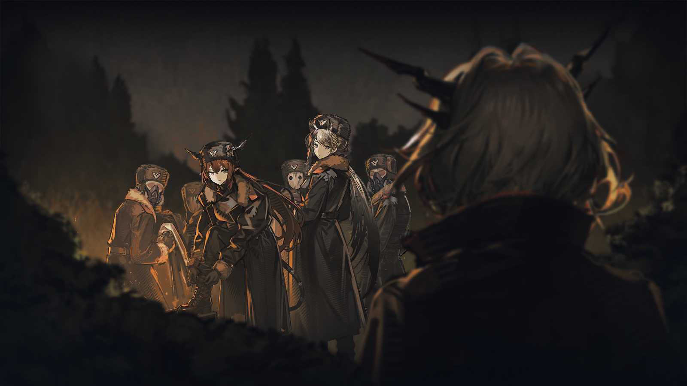
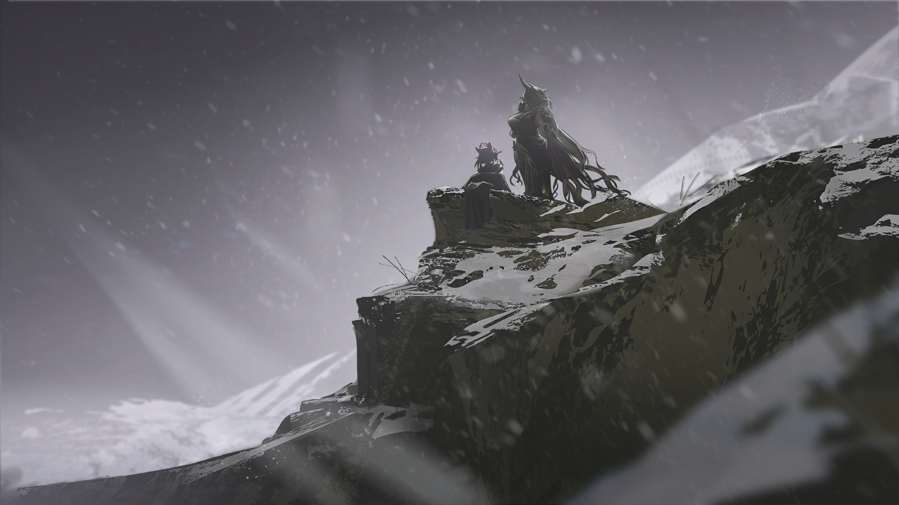
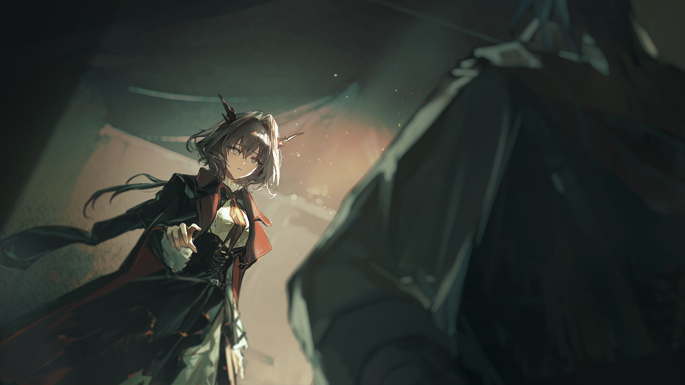

塔露拉
……不要再提起那个名字。

雅罗米尔
这算什么？对你的敌人的请求？
雅罗米尔
看上去你还在意自己犯下的罪孽。
塔露拉
也好，用这把剑碾碎你要来得更直接点。

雅罗米尔
哈……狂妄的感染者。
雅罗米尔
我必须得承认，你的确算得上我见过最强大的战士。可你竟然妄图将这种力量用来对抗乌萨斯？
雅罗米尔
你杀害了养育你的公爵，又在乌萨斯各处挑起动乱。你侥幸躲过了乌萨斯的审判逃去别的国家，现在竟敢又回到你背叛过的土地。

雅罗米尔
是什么样的野心支持你做出这么多邪恶的举动？我一定得剖开你的心脏好好看看……看看你身上到底流淌着多么肮脏的血。

塔露拉
……我明白了。真遗憾，我没办法在这里戳破你信以为真的幻象。
塔露拉
怎样才能让一个人理解他从来没有看见过的苦难，你甚至从来没有见过乌萨斯真正的样子。
塔露拉
可想想你自己吧，你认为我们之间有什么区别？
塔露拉
你用这种程度的源石技艺强化自己的血肉之躯，充当乌萨斯锋利的爪牙。
塔露拉
你认为自己还有多久……也会成为感染者？
雅罗米尔
……你不配诋毁我为乌萨斯做出的牺牲！
雅罗米尔
我在用自己的生命捍卫乌萨斯的荣耀，直到最后一刻，我也会作为战士而结束自己的生命！
雅罗米尔
至于你们，背叛了故土的败类，你们永远失去了分享乌萨斯荣光的机会，那就变成喂养这片土地的养料——

雅罗米尔
怎么回事？
紧急的战报
雅罗米尔队长，我军派往东路的增援遭遇了埋伏！
紧急的战报
不知道为什么，先头部队突然对增援部队发起了袭击！
紧急的战报
天灾环境对通讯造成的影响太大了，战场很混乱，我们恐怕很难再维持阵线——

雅罗米尔
你说什么？！！
意料之外的战报让青年难以克制，而当他意识到自己犯下的错时，一切都已经晚了。
他抬起眼，目光紧盯着上一秒还被自己视为猎物的存在。

塔露拉
看上去，你的部队并不如你期待的那样战无不胜。
雅罗米尔
不要挑衅我。不过是耍了一点小把戏……军队想要碾死你们不过是轻而易举——
塔露拉
如果你想让更多的部队给你陪葬的话……试试看吧。
塔露拉
再次见面的时候，我一定会让你偿还你对感染者的血债。
塔露拉
但愿在那之前，你能认清你在为什么而战。

雅罗米尔
咳咳……！咳！
雅罗米尔
该死——！

集团军指挥
雅罗米尔队长，天灾已经很近了。行动不能再这样下去。
雅罗米尔
给我通知战争术师……我不管他们用什么手段，我绝对不允许任何一个活着的感染者走出这片山林！
集团军指挥
等等，在这个时候？！现在大规模施放法术随时可能引发天灾！
雅罗米尔
就算这样——
斯韦特兰纳
已经够了，雅罗米尔。

雅罗米尔
元帅？这是为什么——
斯韦特兰纳
我对你说过的中央区的事态，又出现了我们意料之外的变化，具体的消息，我会当面告诉你。
斯韦特兰纳
尽快带部队回到驻地。
雅罗米尔
可是那些感染者，杀害了阿纳托利的凶手——
斯韦特兰纳
不过是一群被逐出了巢穴的鼷兽，就算放任他们不管，这个寒冬本身就能要了他们的命。
斯韦特兰纳
记住，孩子，你生来就背负着非凡的使命……你只该为那些高尚的事物而战。

雅罗米尔
……

塔露拉
米拉娜！
塔露拉
太好了……你平安无事……

米拉娜
我们都平安无事。
米拉娜
按照你的安排，我们在这里接应到了很多同伴。
米拉娜
塔露拉，你是对的，你做到了。

塔露拉
不……这不是我的功劳……是每个人……
塔露拉
总之，大家都在……这真是……太好了……
塔露拉环顾周围的人群，终于长出了一口气。虽然每个人都已经疲惫到了极点，人群间依然弥漫着劫后余生的喜悦。
接着，她的神情又突然紧张起来。

塔露拉
对了……你有看到九吗？

米拉娜
“九”？
塔露拉的目光热切地在人群中搜寻，却迟迟没有找到那位斐迪亚的身影。她当然知道这样是徒劳，如果九的确在这里，又怎会默不作声？
可是……

塔露拉
不……绝不该这样……

雷德
塔露拉，有情况。
雷德
有一支集团军小队追过来了，离我们很近。
雷德
就在前面了。
塔露拉
……
望远镜中，一支在山林中穿梭的队伍清晰可见。他们身上的深色军服在这片雪林格外扎眼。
雷德
我很确定，在我们撤离的时候，战场上的集团军阵线的确崩溃了才对。
雷德
他们能在这么短的时间里重新组织搜捕？
塔露拉
永远不要低估正规军的纪律，我见过了他们的将领，是个难缠的敌人。
雷德
可是这支队伍看上去人数也不多，怎么敢这样孤军深入？
塔露拉
你在这里戒备，绝对不能让他们靠近我们的大部队。
塔露拉
我带人去截断他们的退路，无论如何，绝对不能让他们把我们的消息传递回去。
雷德
明白。
塔露拉再一次握紧了手中的剑。
一夜鏖战，她开始感到手中巨剑变得沉重。
离上一次让这把剑沾满鲜血已经过去了很久，塔露拉快要忘了任由愤怒来驱使它是什么感觉。
可是现在，她做不到不去想泽尔格勒的惨状，那些永远被留在这里的同胞……还有他们差一点就能得到的，属于自己的家园。
塔露拉快要逼近那一小股集团军的队伍，她很确信自己的火焰随时可以让他们身陷火海。
但不知为什么，那支队伍的行军速度渐渐慢了下来，甚至开始原地休整。
塔露拉
这是——

塔露拉
——怎么回事……？
紧接着——
在那一件件厚实的军装下，塔露拉终于见到了熟悉的面孔。
塔露拉
九？
塔露拉
还有西尔卡，我还以为——
塔露拉
……怎么会是……你们……
九
……
九
……好久不见……

费奥多尔
……

沉稳的侍从
大人，我们——

费奥多尔
所以，在内卫之后……
费奥多尔
……跟着我们的那些人……都离开了吗？
费奥多尔
那个叫“希尔达”的女孩，还有跟随她的感染者……
沉稳的侍从
是的。最后那两个“怪胎”刚刚也离开了。

费奥多尔
……哈。
费奥多尔
如果不是她提出来，沉浸在恐慌中的人们怕是都忘了，原来还有“逃离乌萨斯”这个选项吧。
费奥多尔
那些感染者将她当作救世主的模样，也就说得通了。
沉稳的侍从
可并不是所有人都这样想，大人。选择背弃与遗忘故土的人毕竟是少数中的少数，更多人都还期盼着您能回到圣骏堡。

费奥多尔
不必浪费时间说这些宽慰我的话语了。维特……不知道现在他在什么地方。总之，我们该去哪儿？
沉稳的侍从
前往图利斯卡亚探路的队伍早已经出发了。我们也在剩下的人里，调拨了人手向扎莫列斯报信，了解中央集团军第九师团的情况。
沉稳的侍从
总之，必须先确保您所前往的路线，是绝对安全的。
费奥多尔
……
费奥多尔
希望他们……行动顺利。

轻佻的女性
你真的是个温柔的人呀，塔伊西亚。
轻佻的女性
无论心里再怎么厌烦那位小皇帝，还不是站出来，主动为他引开追兵？
轻佻的女性
到底是因为这是希尔达的任务，还是你发自内心地觉得……
轻佻的女性
我们得保护这位可怜的、无助的、受苦受难的……“同胞”？
寡言的女性
……
寡言的女性
请闭嘴吧，佐莱达小姐。

塔伊西亚
这只是我个人的任务。她并没有让您也留下。
佐莱达
哦，可怜的塔伊奇卡——你长到这么大，这么强壮，却都还不知道朋友是什么吧？否则，你怎么会说出这样糊涂的话来呢？
佐莱达
朋友，就是我这样的呀。主动陪着你，赴汤蹈火——
塔伊西亚
不必用纯洁和高尚的理由来粉饰您逗留的目的。
塔伊西亚
您想看戏，无所谓，但至少请不要……妨碍我。
佐莱达
不行啊。就算是看戏，都还得先瞧瞧这里有些什么剧本呢。
佐莱达
毕竟，也不是所有亡国的戏码都值得近距离观赏。
佐莱达
如果有人执着寻死，倒不如尊重他的决定。在这点上，我和那小兔子的看法一样。
塔伊西亚
……别再让我听到您这样称呼她。
塔伊西亚
也别再用您那肮脏的嘴，把自己同“她”相提并论。
佐莱达
可是啊，塔伊西亚。
佐莱达
你认为她能救赎一切，可又有谁……当真能救赎万事万物呢？
塔伊西亚
……
佐莱达
哦，不过针对眼下的问题，我还是必须得问——
塔伊西亚
无论如何，我都会完成她的嘱托。
塔伊西亚
既然希尔达要他活下来，那他就必须活着……
塔伊西亚
活下来，活到死。
佐莱达
……
佐莱达
当面包里没有了盐♪
佐莱达
灯塔上也不再亮光♪
佐莱达
那伟岸帝国的黑夜，就静静地笼罩♪
佐莱达
……是呀，多熟悉的剧本啊。

谨慎的步兵
队长，前锋来报，除开一直跟进的整合运动踪迹之外，我们又发现了一支疑似集团军快速反应部队的队伍。
雅罗米尔
编队标准？
谨慎的步兵
集团军标准侦察队，十二人。
雅罗米尔
方向是？
谨慎的步兵
扎莫列斯及其附属卫星城辐射圈。
雅罗米尔
中央集团军的驻地？难道是漏网的败将残兵，要去与第九师团会合……具体人员分布呢？
谨慎的步兵
需要进一步接触。
雅罗米尔
那就立刻带队去确认。
谨慎的步兵
您呢？
雅罗米尔
我去继续追踪那群感染者。不管是那个白发的瓦伊凡，还是暂时不知去向的希尔达——
雅罗米尔
我不会放过她们之中的任何一个。

塔露拉
抱歉……我来晚了。

九
别说这些了，你们能在这个时候赶回来，取得这样的战果，已经是奇迹。

塔露拉
请告诉我……我们失去了多少同伴——

九
……很多。雷德他们已经在尽量清点伤亡人数了。
九
第一集团军不会善罢甘休，我们也必须尽快决定下一步的计划了。
塔露拉
乌卡边境的据点已经暴露，恐怕我们不能继续在南方逗留。

九
难道你打算回到北方去？

塔露拉
不——当然不！

塔露拉
无论如何，我们应该尽可能保留剩下的队伍，也许在东方，或者是更西南方，还能找到下一个据点……

米拉娜
我不明白，塔露拉，为什么在你看来，我们只有四处躲藏一条路可走？

塔露拉
米拉娜……？
九
还没有听你介绍过，这位是？
塔露拉
她是米拉娜，是我们在泽尔格勒结识的伙伴。她带领一支队伍加入了我们。
塔露拉
她也是一位……了不起的战士。
米拉娜
塔露拉说起过你，九小姐，很高兴见到你。
九
遗憾，这不是一个欢迎新同伴的好时机。
米拉娜
现在对于整合运动而言，也许是一个绝无仅有的好时机。
米拉娜
塔露拉，你还记得吗，我们之前听到的中央区动荡的消息。
塔露拉
你是说——
米拉娜
这应当是我们的机会……我们应该到中央区去。
塔露拉
不……不。怎么可以这样冒险？
塔露拉
如果消息为真，中央区正是集团军大动干戈的地方，我们要怎样带领现在的队伍面对可能遭遇的战斗？

米拉娜
正是在敌人最混乱的地方，最有可能寻觅到战机。

塔露拉
这实在是太过冒险——
米拉娜
每一条路都是冒险的。
米拉娜
如果我们继续逃窜下去，难道我们要寄希望于中部的第七集团军会对感染者心慈手软，还是卡西米尔人对感染者网开一面？
米拉娜
我们只能斗争，不停地斗争……去压迫最深重的地方唤起同伴，去最危险的地方寻找击破敌人的良机。
米拉娜
我们一路走来见证的一切还不够清晰吗？我们怎么能够通过保守的行动来躲避悲剧的发生？
米拉娜
放弃斗争当然可以让我们不用背负使同伴牺牲的罪责，难道因此就可以坦然接受无所作为的结果？
米拉娜
斗争必须要坚持下去，我们绝不能软弱……把软弱留给我们的敌人吧，留给那些永远身居高位，习惯了玩弄别人命运的人。
米拉娜
应该让他们来惧怕我们。
塔露拉
——！

米拉娜转过了身，但塔露拉忘不了刚刚与她对上的眼神。
眼前的青年是如此赤诚，自己仿佛要被她的热情所灼痛。
这些坚定的话语似乎触及了塔露拉心底许久不曾展露的热血，也触及了她快要忘记的恐惧。
到底是为什么……
塔露拉无端地感到一股心悸。
脑海中涌起了无数回忆，塔露拉无法从繁杂的思绪中准确捕捉到那一丝令她不安的念头。
？？？
就算所有人都想要得到一个好结果——这些人却依然会失败。
？？？
除非我们结束掉这一连串的平庸年月。
塔露拉
——！
九
……先到这吧。
米拉娜
……
塔露拉
……
九
这样下去也争不出个结果，我们今天先安营休息。我们的队伍都疲惫到极点了。
九
我不知道你们说的中央区的乱局到底是怎么回事，听上去你们手上的情报也不够多。
九
先休整队伍，再努力多获取一些情报。时间紧张，也不能盲目下判断。

塔露拉
你说得对……我们都需要喘一口气。

九
西尔卡……？

西尔卡
……源石技艺的使用痕迹就结束在这附近……
西尔卡
古怪，用这样的源石技艺一定是为了隐藏踪迹，可为什么到这里就停了？这地方还远不算安全区。
警惕的声音
——谁？！

警惕的士兵
站、站住！不要再往前了！

西尔卡
……中央集团军？
警惕的士兵
你——
士兵手中的弩箭猛地一颤，仅剩的箭矢瞬发，却射偏了方向，没能伤到对方分毫。
西尔卡
你是个新兵。你应该也不会使用源石技艺，一路上帮你们掩盖踪迹的另有其人。
警惕的士兵
你在说什么？我警告你——

西尔卡
告诉我，你们还剩多少人，又为什么会出现在这里？

西尔卡
本应在中央区驻守的集团军却逃窜到南方，难道圣骏堡真出了什么问题……
？？？
是啊，这意味着圣骏堡陷落了。你们听到的一切都是真的。

西尔卡
——？！
警惕的士兵
大人！您不应该——
？？？
叛徒……从来都在帝国的心脏之中。如果我能——
？？？
……呵。不，现在说这些又有什么用呢？都是空话。
西尔卡
你又是……
青年推开挡在他身前的士兵，走上前去，直视提问的人。
恍惚的青年
一路上，都是他们在保护我。我不知道你是哪支追兵的手下，不过既然你已经找到我了……

恍惚的青年
不管你是否同样为杀我而来，我都不会再躲在他们身后了。
西尔卡
……

西尔卡
呵，我还真是……找到了不得了的东西。